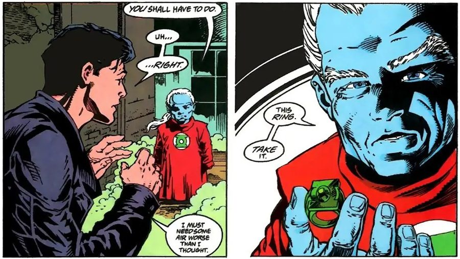
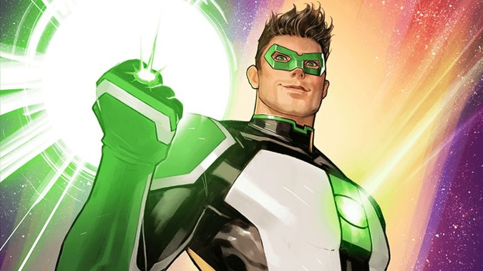
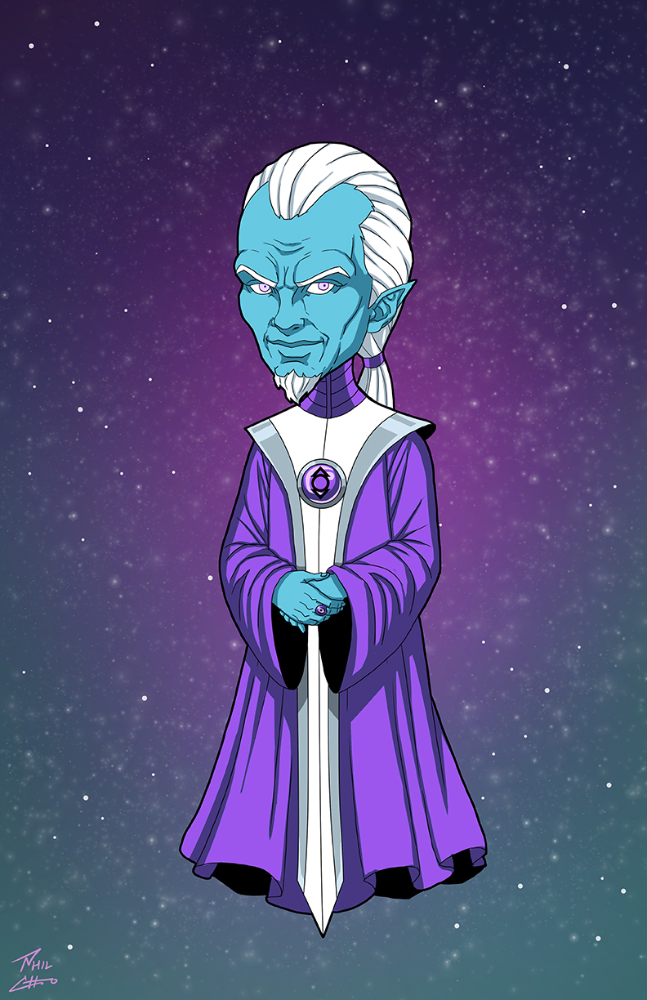

In-Universe History · 1994
The Last Ring
Ganthet gives the final power ring to an artist named Kyle Rayner.

1994
The story
When Hal Jordan fell — when the grief of Coast City broke him and he tore through the Corps as Parallax — the Guardians spent their last breaths pouring everything they had left into one survivor: Ganthet. Then they died, and the Central Power Battery went dark, and three billion years of Green Lanterns ended in a single night.
Ganthet carried the last power ring to Earth. He found a struggling freelance artist in Los Angeles named Kyle Rayner — a young man with no training, no Corps, no idea what a Green Lantern even was — and offered him the ring with five words that defined an era: "You will have to do."
It was the strangest choosing in Corps history. Kyle wasn't fearless; he was afraid, and he knew it. But Ganthet had learned something the other Guardians never did: the ability to feel fear and overcome it made Kyle stronger, not weaker — and immune to the thing that had destroyed Hal. The last ring found the one bearer Parallax couldn't touch.
Kyle Rayner debuted in Green Lantern vol. 3 #48 (January 1994, Marz/Banks), at the climax of Emerald Twilight. He would carry the franchise alone for a decade — the Torchbearer, the last Green Lantern, the one who rebuilt everything from a single ring.
Key figures

Kyle Rayner— the artist who inherited the last ring.
Ganthet— the last Guardian, who chose hope over perfection.Where to read
Green Lantern vol. 3 #48–50 (1994) — Emerald Twilight.
DC Comics — non-commercial fan tribute.